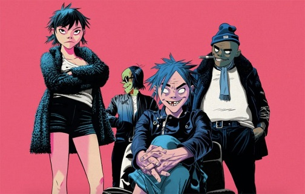

Gorillaz
アーティスト一覧に戻る

Gorillazは1998年に結成されたイギリスのバーチャル覆面音楽プロジェクト。
主なメンバーはDamon Albarn(1968年3月23日～)、Jamie Hewlett(1968年4月3日～)、Remi Kabaka Jr.(1970年4月11日～)。
アルバム
Demon Days
Plastic Beach
Humanz
Song Machine, Season One: Strange Timez